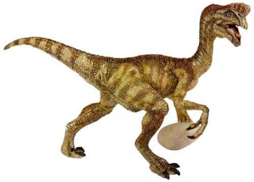
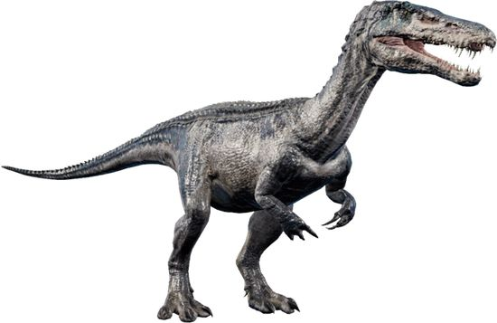
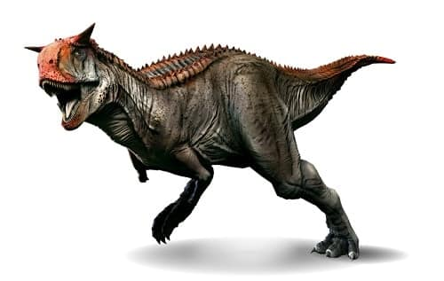
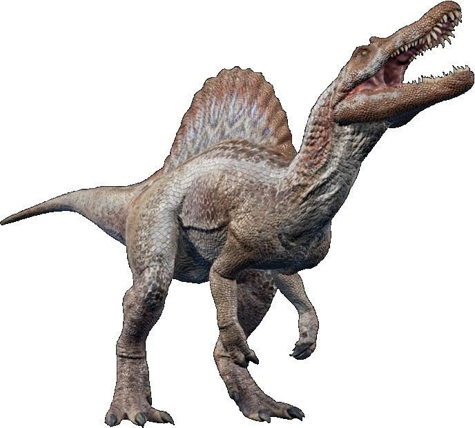
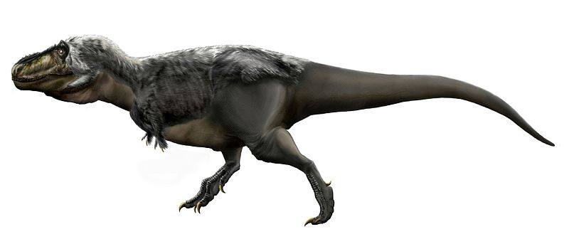

Oviraptor philoceratops es la única especie conocida del género extinto Oviraptor (lat. "ladrón de huevos") de dinosaurio terópodo ovirraptórido, que vivió a finales del período Cretácico, hace aproximadamente 75 millones de años, en el Campaniense, en lo que hoy es Asia. Al contrario de lo que el nombre sugiere, no hay pruebas de que Oviraptor se alimentara de huevos. Sus fósiles se hallaron cerca de un nido que se asumió que estaba atacando, pero estudios revelaron posteriormente que el nido pertenecía, de hecho, a Oviraptor. La popular representación de Oviraptor, con una cresta alta, pertenece realmente a Citipati, un pariente cercano.
Oviraptor philoceratops se conoce por un solo esqueleto parcial, número de espécimen AMNH 6517, así como un nido cercano de quince huevos que se ha referido esta especie, AMNH 6508. Oviraptor era un dinosaurio no aviano similar a las aves, que medía alrededor de 1,7 metros de largo, 0,70 de alto y de peso 25 kilogramos.1 Su jaula costal, particularmente, exhibía varias características que son típicas de pájaros, incluyendo un sistema de procesos en cada costilla que habría mantenido a la caja torácica rígida. Un pariente de Oviraptor llamado Nomingia fue encontrado con un pigóstilo, que es un sistema de las vértebras fundidas que ayudarían más adelante a apoyar las plumas de cola de pájaros. Las impresiones de piel de oviraptorosaurianos más primitivos, como Caudipteryx y Protarchaeopteryx, muestran claramente una cubierta extensa de plumas en el cuerpo, las alas con plumas y velas con plumas en la cola. Una vela en cola también es indicativo de la presencia de un pigóstilo en Nomingia, sugiriendo que esta característica era común entre oviraptorosaurianos. Además, la posición en el nido de empollamiento de los especímenes de Citipati implica el uso de alas encargadas de cubrir los huevos.2 Dado el alto grado de similitud anatómica entre estas especies y Oviraptor, es altamente probable que este último también tuviese plumas.
Tradicionalmente se ha descrito a Oviraptor con una gran cresta similar a la del casuario, pero estudios posteriores indicaron que el cráneo de dicho espécimen correspondía a un Citipati, un pariente cercano del Oviraptor.3 Dadas las relaciones filogenéticas, es probable que el Oviraptor exhibiera una cresta, aunque ante la ausencia de un cráneo, la presencia y dimensiones de esta resultan imposibles de determinar.
Al contrario de lo que el nombre sugiere, Oviraptor no se alimentaba de huevos, cosa que se presumió debido a que sus fósiles se hallaron cerca de un nido que se asumió pertenecía al género Protoceratops, dado que este era el dinosaurio más abundante de la formación. Estudios revelaron posteriormente que el nido pertenecía, de hecho, a Oviraptor.4 Ya en 1977, Barsbold argumentaba que la fuerza de las mandíbulas del Oviraptor le hubieran permitido abrir las conchas de los moluscos como las actuales ostras, que se hallaron en el mismo sitio que el Oviraptor. La idea de las mandíbulas aplastadoras fue propuesta por H. F. Osborn, que creía que la falta de dientes del ejemplar original, con la extensión de los huesos que forman el paladar constituían una herramienta para romper huevos, pero esta interpretación está siendo discutida.4 Estos huesos forman parte del maxilar y mandíbula que convergen a unas prolongaciones. El resto del paladar óseo, a diferencia de otros dinosaurios, se extiende más allá que la línea de la mandíbula y pudo ocupar un espacio inferior sin dientes en la mandíbula. Un pico o rhamphotheca cubría los bordes de ambas mandíbulas y probablemente del paladar según lo propuesto por Barsbold y Osborn.
|
 |
 |
|  |
 |
|